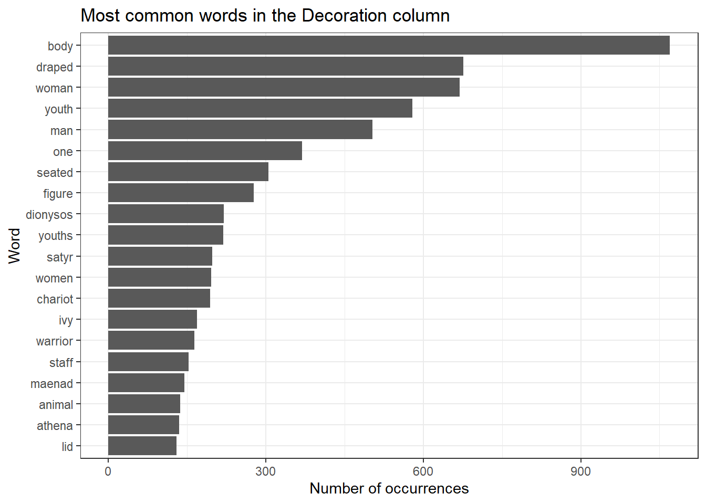
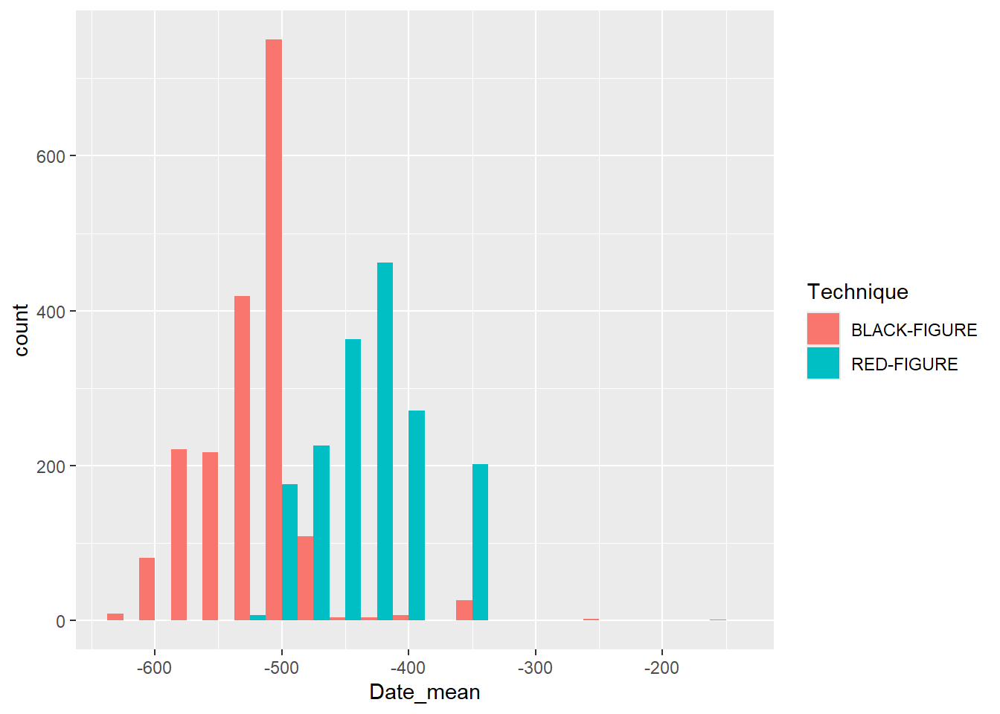
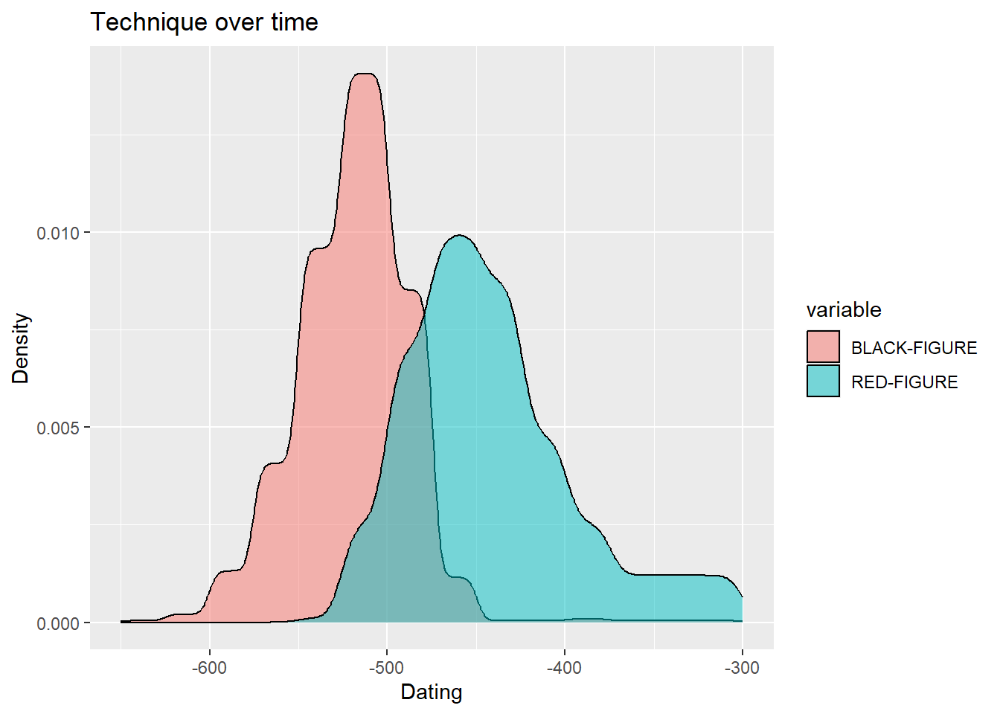
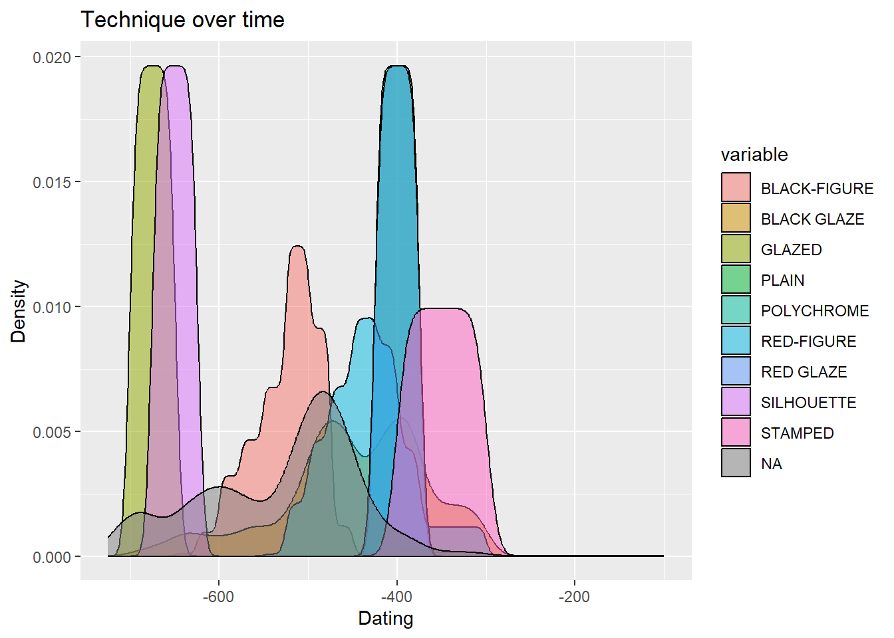

library(tidyverse)AH-ANTQ103: Workshop 3
Spring 2024
Data
In this workshop, we will work with Beazley Archive data and focus more on text analysis and fuzzy dates. This workshop is based on work done by Kalle Valkeakari.
As always, we start by loading tidyverse.
We then load the data. We use the same dataset we had from the first workshop.
data <- read_csv("https://github.com/ucrdatacenter/projects/raw/main/AH-ANTQ103/2024h1/Beazley_Archive.csv")We start by looking at the data. We can use the following functions to look at the data.
head(data)
glimpse(data)
summary(data)
names(data)After looking at the data, we have decided that we don’t need the 9th and the 12th through the 29th columns, so we remove them. We can do this using the select() function. Think about why we don’t need these columns.
data_short <- data %>%
select(-9, -12:-29)Note that we can also do this by defining the columns we do want to keep
data_short <- data %>%
select(1:8, 10:11)Or by stating the column names we want to keep
data_short <- data %>%
select(URI, Vase_Number, Fabric, Technique, Sub_Technique, Shape_Name, Provenance, Date, Attributed_To, Decoration)We might want to check if there are multiple entries for the same object. Luckily there is a Vase Number column, so we can check if there are multiple entries for the same vase number. We can do this using the duplicated() function. We can then use the filter() function to filter the data to only include the duplicated rows.
data_short %>%
filter(duplicated(Vase_Number))Given that the tibble that this returns is empty, we can conclude that there are no rows with the same vase number.
We can also check if there are any rows with missing data. We can do this using the is.na() function. This returns a logical vector, which we can then use to filter the data.
data_short %>%
filter(is.na(Vase_Number))Given that the tibble that this returns is empty, we can conclude that there are no rows with missing data.
Text analysis
Now that we know that there are no rows with missing data, and no rows with the same vase number, we can start looking at the data in more detail. We are interested in the decorations on the vases, so we will look at the Decoration column.
data_short %>%
select(Decoration)This is text data. An interesting question may be what the most common words are in the Decoration column. These would correspond with the most common decorations. We can do this using the unnest_tokens() function. This function takes a column of text data, and splits it into individual words. It then returns a tibble with the words in a column called word. The unnest_tokens() function is a part of the tidytext package, which we must download and load before we can use the function.
install.packages("tidytext")library(tidytext)data_words <- data_short %>%
unnest_tokens(word, Decoration)Lets take a look at the most common words.
data_words %>%
count(word) %>%
arrange(desc(n))We can already see that there are some NA values. We can remove these easily using the drop_na() function.
data_words %>%
drop_na(word) %>%
count(word) %>%
arrange(desc(n))There are still some words that are not interesting for our analysis. These are called stop words. We can remove these using the anti_join() function. This function takes two tibbles, and returns a tibble with the rows from the first tibble that are not in the second tibble. The stop words are in a tibble in the tidytext package.
stop_words %>%
View()Alternatively we can define our own custom stop words.
tibble <- tibble(
word = c("a", "and", "with", "an", "or", "the", "of", "to", "in", "for", "on", "at", "from", "by", "about", "as", "into", "like", "through", "after", "over", "between", "out", "against", "during", "without", "before", "under", "around", "among"),
)We can then use the anti_join() function to remove the stop words from the data.
word_counts <- data_words %>%
drop_na(word) %>%
anti_join(tibble, by = "word") %>%
count(word) %>%
arrange(desc(n))Here we still have the letter “b”. We may decide to remove all words that are only one letter long. We can do this using the filter() function. The str_length() function returns the number of characters in a string. We can use this to filter the data.
word_counts <- word_counts %>%
filter(str_length(word) > 1) %>%
print()There are still a lot of words in here. We decide to only look at the top 20 words. We can do this using the top_n() function.
word_counts_top_20 <- word_counts %>%
top_n(20, n) %>%
print()We can then create a plot of these words.
ggplot(word_counts_top_20, aes(x = reorder(word, n), y = n)) +
geom_col() +
coord_flip() +
xlab("Word") +
ylab("Number of occurrences") +
ggtitle("Most common words in the Decoration column") +
theme_bw()
For the homework, the separate() function is essential. This function takes a tibble, a column name, a new column name and a separator. It then splits the column into two (or more) columns, and returns a tibble with the new columns. Here I give a silly example of how to use this function. It will be actually useful in the homework. If we take a look at the decoration column, we can see that some vases have an entry that is one word, then a colon and then more words. Imagine we want to isolate the first word and the words after the colon. We can do this using the separate() function, by setting the separator to “:”.
data_short %>%
separate(Decoration, c("Decoration_1", "Decoration_2"), sep = ":")Fuzzy dates
Usually data for origins of artefacts are given in ranges (e.g. 450-375 BC) and computers do not really like this type of “fuzzy” or uncertain time. There are two ways to deal with this type of data. The first is quite simple and implies taking the mean of these two values, but can lead to big errors if you do not understand the limitations to this approach. Let’s look at the underlying technique used for pottery, that is, the colors of the decorations on the pottery. Then we can ask, how does the technique change over time?
We can separate the dates into two columns, and then take the mean of the two columns. We can do this using the separate() function.
data_short_dates <- data_short %>%
separate(Date, c("Date_start", "Date_end"), sep = " to ")These columns are now character columns. We can convert them to numeric columns using the as.numeric() function.
data_short_dates <- data_short_dates %>%
mutate(Date_start = as.numeric(Date_start),
Date_end = as.numeric(Date_end))We can then calculate the mean for each row.
data_short_dates <- data_short_dates %>%
mutate(Date_mean = (Date_start + Date_end) / 2)We only keep the rows with a black figure or red figure technique, as this allows for easier comparison with the plot we will make later.
plotting_data <- data_short_dates %>%
filter(Technique == "BLACK-FIGURE" | Technique == "RED-FIGURE")We can then create a plot of the technique over time. We use the fill aesthetic to fill the bars with the technique.
ggplot(plotting_data, aes(x = Date_mean, fill = Technique)) +
geom_histogram(binwidth = 25, position = "dodge")
Alternatively, we can keep the times fuzzy. For this we use the datplot package.
install.packages("datplot")library(datplot)In this package, there is already a Beazley dataset, which we will use from now on. We can load this dataset using the data() function.
data(Beazley)For the type of plot we want to make, we need to have the data in a specific format, namely ID, Factor, date_min, date_max. The datplot dataset is already in this format.
The following code creates a copy of every year it could possibly be, given the range of dates. We can define the step size, which is the number of years between each copy.
result <- datsteps(Beazley, stepsize = 1)It also calculates a weight for each date. This is the inverse of the number of copies. This means that if there are more copies of a date, the weight will be lower.
We can use this data to plot the technique over time. Note that we define the weight as the weight aesthetic. This means that the weight will be used to determine the height of the density curve. Also note than the Technique column is here called variable.
ggplot(result, aes(x = DAT_step, fill = variable, weight = weight)) +
geom_density(alpha = 0.5) +
labs(x = "Dating", y = "Density") +
ggtitle("Technique over time")
Homework assignments
Assignment 1
- Create a plot of the most common descriptions of the vases (As we did in the tutorial) in a new dataset. Use this dataset. Reuse the code from the lecture to create the plot, and compare the results. What do you notice?
Note that you can import the data from GitHub using this link:
"https://github.com/ucrdatacenter/projects/raw/main/AH-ANTQ103/2024h1/Beazley_Archive_2.csv"Assignment 2
Create a plot of the most common shapes of the pottery in a new dataset. Use the dataset from 1.1. We are looking just for the main shapes, so for example: “CUP FRAGMENT” and “CUP” should be counted as the same shape, namely “CUP”. Show the top 10. You will need to split a column. Hint: The separator you want to use is either a comma or a space You can use this expression to do that
[, ].Use the code you wrote for 1.1 to create a plot of the most common shapes of the pottery in the original dataset. Again, “CUP FRAGMENT” and “CUP” (and similar definitions) should be counted as the same shape. Adapting the code should be very straightforward.
Assignment 3
Create a plot of the technique over time using the original dataset, which includes the fuzzy dates.
Hint: The dataset you use for the datsteps function needs to be in a specific format.
You can use this code to create a dataset you can use as a starting point.
data_short_dates <- data_short %>%
separate(Date, c("Date_start", "Date_end"), sep = " to ")
data_short_dates <- data_short_dates %>%
mutate(Date_start = as.numeric(Date_start),
Date_end = as.numeric(Date_end))The plot should look like this:

Assignment 4
This is an open assignment. Create a new, original plot that you think is interesting and report your findings. This could be a text analysis on a new Beazley dataset and compare the results to what we found earlier, or you can perform another time analysis on the Beazley dataset. You can also use a different dataset and compare your findings. Lastly, if you can think of another interesting analysis using archaeological data, you can do that as well. While working on this assignment, please be aware that this is the file you will be asked to work with for the final report.
Some ideas may include, but are not limited to:
Comparing the provenances of vases from several large museums
Look at the occurrences of mythological figures on vases
Compare the shapes of vases for shapes that may be used in every day life